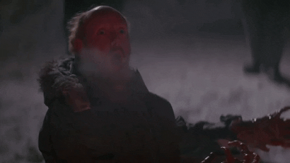

The Thing(1982) directed by John Carpanter
(Personally reviewed by Brandon Contreras)
A few scenes from differnet points of the movie as the crew starts to feel a level of mistrust towards each other with flamethrowers.
One of the crewmembers already being transfigured into the thing.
The ultimate alien terror, John Carpenter’s 1982 critically reviled to critically revered movie “The Thing” is the ultimate form of mistrust. A remake of the Howard Hawk's classic, 12 people in a US station in Antarctica are put in the mites of an alien with the ability to absorb and take the form of their victim. The paranoia sets in as the close encounter with the "Thing" kicks things into high gear in this gloomy and dramatic remake. Instead of the glorious defeat of the alien in the original movie, Carpenter takes a more gloomy and distressed approach to the story. The claustrophobic setting of the winter station puts the team into immediate mistrust as the thing comes into the station in the form of a dog. The night is filled with blue lights that highlight the shadows of those that need to step outside in the freezing weather. It speaks a lot higher to the idea about how people would react in such an odd, but horrifying scenario. As the fellow men with you could also be the most dangerous enemy. The movie would be universally hated because of other alien films at the time that would demonstrate them as cutesy and loveable such as E.T. From then on, the movie would receive the validation that it deserved as an apex of horror and a classic.
My favorite scenes that showchase the monster and the amazing special effects that were done pratically by the way!

The amazing pratical effects that Carpanter himself had dreamed of for this very transformation.